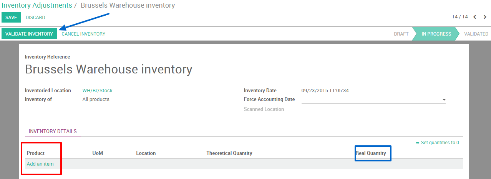

If you own different warehouses you might want to transfer goods from one warehouse to the other. This is very easy thanks to the inventory application in Odoo.
Configuration
First of all you have to select the multi locations option. Go to in the Inventory application. Then tick the Manage several locations per warehouse option. Please don't forget to apply your changes.
Tip
This option should also be ticked if you wish to manage different locations and routes in your warehouse.
Creating a new warehouse
The next step is to create your new warehouse. In the Inventory application click on . You are now able to create your warehouse by clicking on Create.
Fill in a Warehouse Name and a Short Name. The short name is 5 characters maximum.
Tip
please note that the Short Name is very important as it will appear on your transfer orders and other warehouse documents. It might be smart to use an understandable one (e.g.: WH/[first letters of location]).
If you go back to your dashboard, new operations will automatically have been generated for your new warehouse.

Creating a new inventory
If you create a new warehouse you might already have an existing physical inventory in it. In that case you should create an inventory in Odoo, if not you can skip this step.
Go into the inventory application, select . You can then create a new inventory by clicking on Create. Fill in the Inventory Reference, Date and be sure to select the right warehouse and location.
Next, click on Start Inventory. A new window will open where you will be able to input your existing products. Select add an item and indicate the Real Quantity available in the warehouse. The theoretical quantity can not be changed as it represents a computed quantity from purchase and sales orders.
Don't forget to validate your inventory once you have recorder the state of all yours product.
Create an internal transfer
The final step is to create your internal transfer. If you want to tranfer 2 units of a product from your first warehouse to another one in Brussels, proceed as follows:
From your dashboard, select a internal movement of one of the two warehouses. To do so, click on .

A new window will open where you will be able to select the source location zone (in this case our "old warehouse") and the destination location zone (in this case our "new" warehouse located in Brussels).
Add the products you want to transfer by clicking on Add an Item and don't forget to Validate or Mark as TODO once you are done.

If you select Validate, Odoo will process all quantities to transfer.
If you select Mark as TODO, Odoo will put the transfer in Waiting Availability status. Click on Reserve to reserve the amount of products in your source warehouse.
It is also possible to manually transfer each product:
Via your dashboard, select the transfer order in the source location.
Select the right transfer order
3. Click on the little pencil logo in the lower right corner in order to open the operation details window. In this new window you can manually indicate how much products you process
Tip
If you decide to partially process the transfer order (e.g. a part of the products can't be shipped yet due to an unexpected event), Odoo will automatically ask if you wish to create a backorder. Create a backorder if you expect to process the remaining products later, do not create a backorder if you will not supply/receive the remaining products.